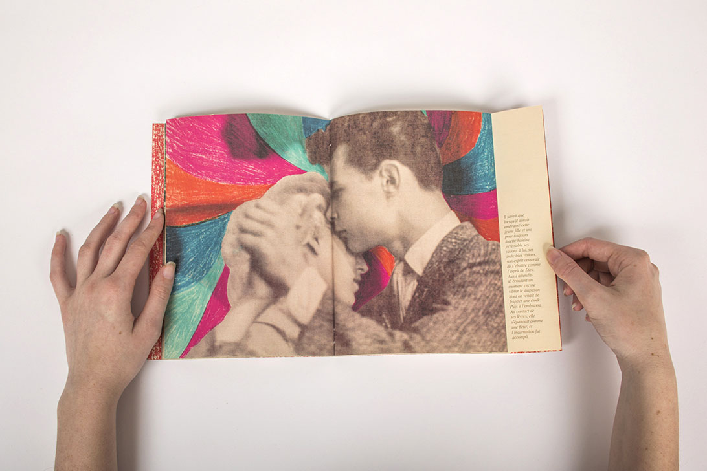
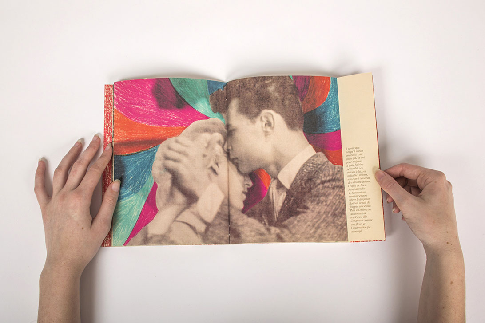

Gatsby le magnifique
À partir de l'analyse de la thématique de collision, j’ai retiré trois notions fortes : la rupture dans une temporalité, la rencontre inattendue et le télescopage. Ces trois idées étaient présentes dans le livre Gatsby le magnifique écrit par F. Scott Fitzgerald et publié en 1925. J’ai donc choisi de constituer une micro-édition reprenant les citations propres aux trois notions dans le livre et d'en produire une interprétation visuelle.
· Édition
· Format 16x21 cm, format ouvert avec rabats 35x21 cm, 32 pages
· 2017